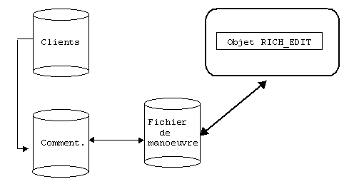

Un objet Rich-Edit permet d'éditer un texte riche dans une zone d'une page Xwin. L'éditeur dispose de fonctions puissantes telles que la gestion des attributs et la mise en forme des paragraphes. Un tel objet permet, par exemple, d'associer des commentaires libres à des enregistrements.
Stockage des textes
L'objet Rich-Edit peut travailler sur un texte placé en mémoire ou sur un texte contenu dans un fichier (.txt ou .rtf).
Si l'on ne désire pas limiter la taille des textes, il faut utiliser la deuxième méthode, à savoir le stockage dans un fichier. De plus, pour ne pas encombrer le disque d'une multitude de petits fichiers de textes, il est conseillé de regrouper tous les textes dans un fichier spécifique.
Attention également : il faut savoir que l'on ne sait pas limiter le texte saisi par l’utilisateur. Avec le texte stocké en mémoire, l'utilisateur peut "perdre" la fin de son texte s'il dépasse la capacité de la donnée réceptrice.
Types de contenu
L'objet gère aussi deux types de contenu (propriété Format) : les textes simples (.txt) qui ne peuvent pas faire l'objet d'un formatage évolué mais qui occupent moins de place et les "vrais" textes riches (.rtf) qui disposent de toutes les fonctions de formatage mais occupent une place supérieure.
Exemple
A chaque fiche client, nous voulons associer une zone de commentaires libres. Le texte ne peut être stocké dans l'enregistrement client, la taille des commentaires pouvant grandement varier d'un client à un autre. Une solution consiste à gérer un fichier séquentiel-indexé contenant tous les commentaires. Mais dans ce cas, attention : les commentaires ne peuvent plus être édités directement et le programme doit copier le texte dans un fichier de manœuvre avant son affichage et doit le remettre dans le fichier d'origine après sa saisie.

Pour plus de détails, consultez le paragraphe "Textes riches" du livre consacré à Ywpf. Vous y trouverez en particulier un exemple de programmation.